← 拖曳比較 →
WEBSITE REDESIGN PROPOSAL
中華民國人力仲介協會 官網改版提案
ABOUT IWARE
自 1996 年成立以來，專注客製化網站設計與開發
我們相信好的網站，來自深入理解每個組織的使命
DESIGN PHILOSOPHY
我們相信，好的作品來自真正理解客戶的需求
仔細聽取客戶的聲音與想法，了解真正的需求
與客戶來回討論，找出最適合的方向與內容
研究市場上的技術趨勢與同類型網站的做法
設計出讓客戶滿意、使用者好用的作品
PROFESSIONAL TEAM
六大部門分工協作，從設計到上線一條龍服務
需求訪談、專案管理
視覺設計、UI/UX、前端開發
後端開發、系統整合
主機管理、資安防護
SEO 優化、數位行銷
售後服務、技術支援
PROBLEM DIAGNOSIS
經完整檢測，發現以下關鍵問題
固定 1000px 寬度，手機完全無法正常瀏覽
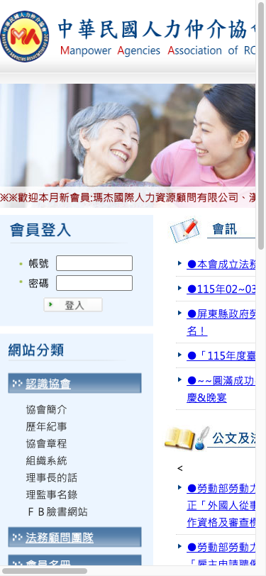
手機實測：內容被裁切，無法操作現有架站平台功能受限，客製化困難
部分頁面出現亂碼，影響閱讀體驗
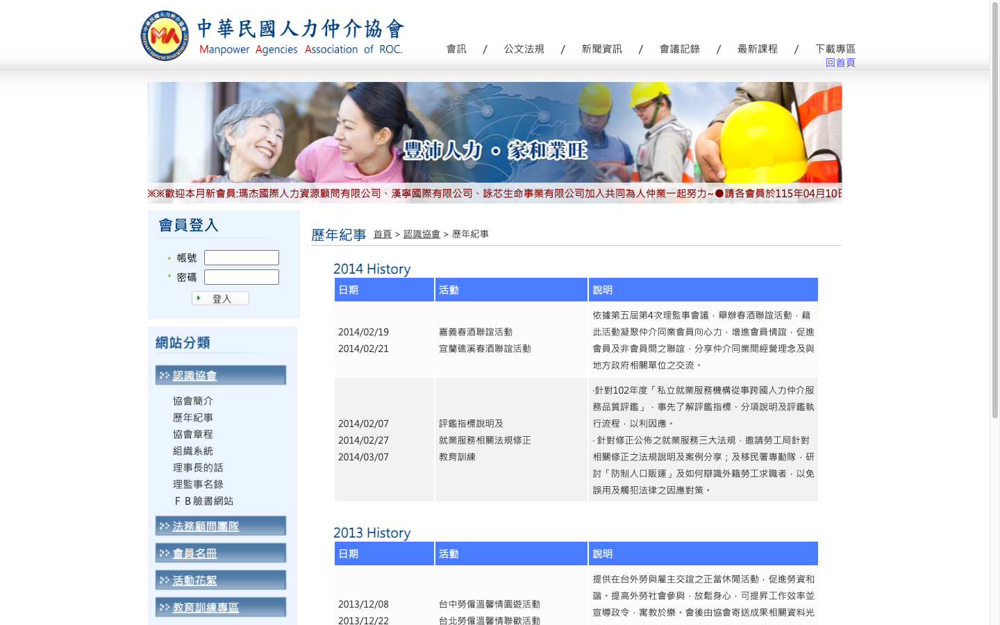
原始碼使用 Big5 編碼，現代標準為 UTF-8已有 SSL 憑證，但 CSS、JS、圖片仍以 HTTP 載入
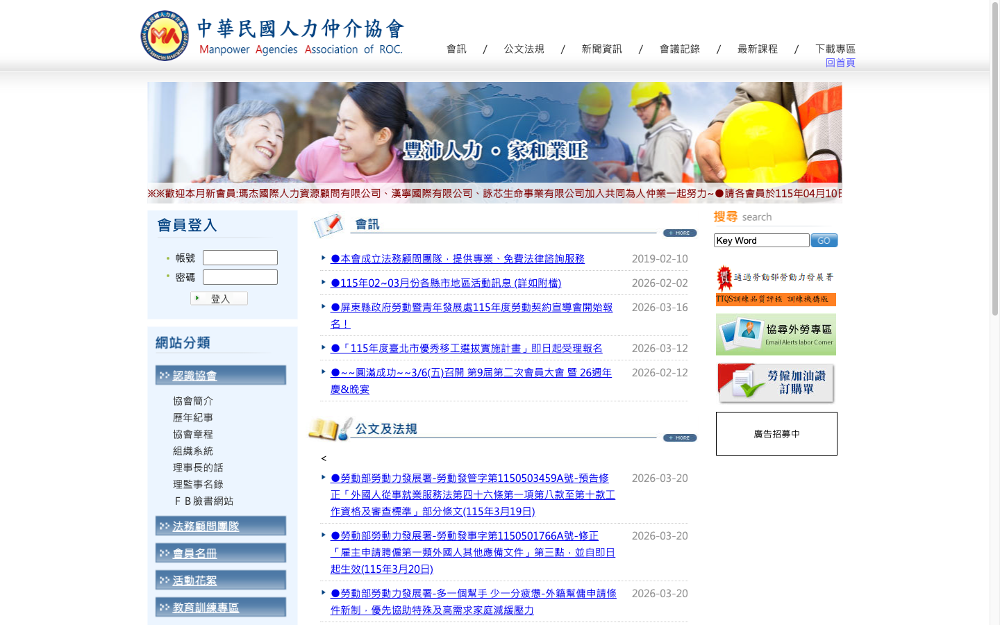
頁面資源仍透過 HTTP 載入，觸發混合內容警告HIDDEN ISSUES
這些問題不容易從表面看出，但正在影響協會的形象與安全
設定 Crawl-delay: 300 秒，等於告訴 Google 每 5 分鐘才能看一頁。45 頁全爬完要超過 3 小時，新發布的內容很久才會出現在搜尋結果。
伺服器完全沒有設定任何安全標頭（CSP / X-Frame-Options 等），任何釣魚網站都可以嵌入貴站頁面進行詐騙。
Cookie 缺少 HttpOnly / Secure 旗標，JavaScript 可直接讀取會員的登入 Session，一旦遭 XSS 攻擊即可劫持帳號。
搜名稱能找到，但缺少 Sitemap.xml、OG 標籤、結構化資料。Google 搜尋結果只有純文字，LINE 分享無預覽圖、無說明。
原始碼中找不到 Google Analytics 或任何分析工具，僅有圖片計數器。完全看不到訪客來源、停留時間和瀏覽行為。
網站收集會員資料卻沒有隱私權政策頁面，作為全國性協會有法律風險。
這些問題在現有平台上都無法修復，需要完整改版才能解決
CURRENT ARCHITECTURE
OPTIMIZATION
頂部 6 項 + 側邊 13 項，共 19 個選單功能重疊散落
合併為 6 個主選單，層次分明、操作直覺
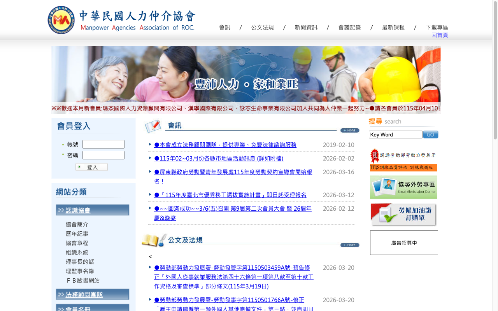
原本畫面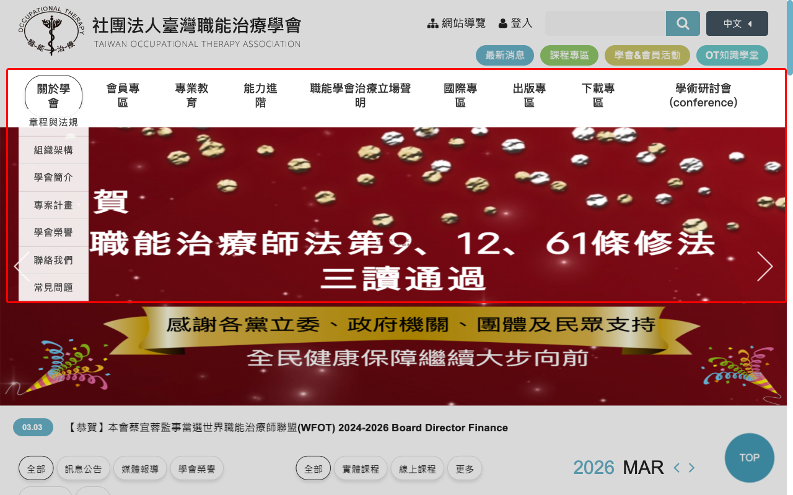
建議參考← DRAG TO COMPARE →
台灣職能治療學會 — 前往查看 →OPTIMIZATION
簡介為靜態文字、歷年紀事停在 2014、組織系統僅一張圖
理事長照片
宗旨 + 歷程
互動式時間軸
2001 ~ 2026
互動式組織圖
可展開各部門
卡片式呈現
照片 + 公司
Facebook
LINE 官方
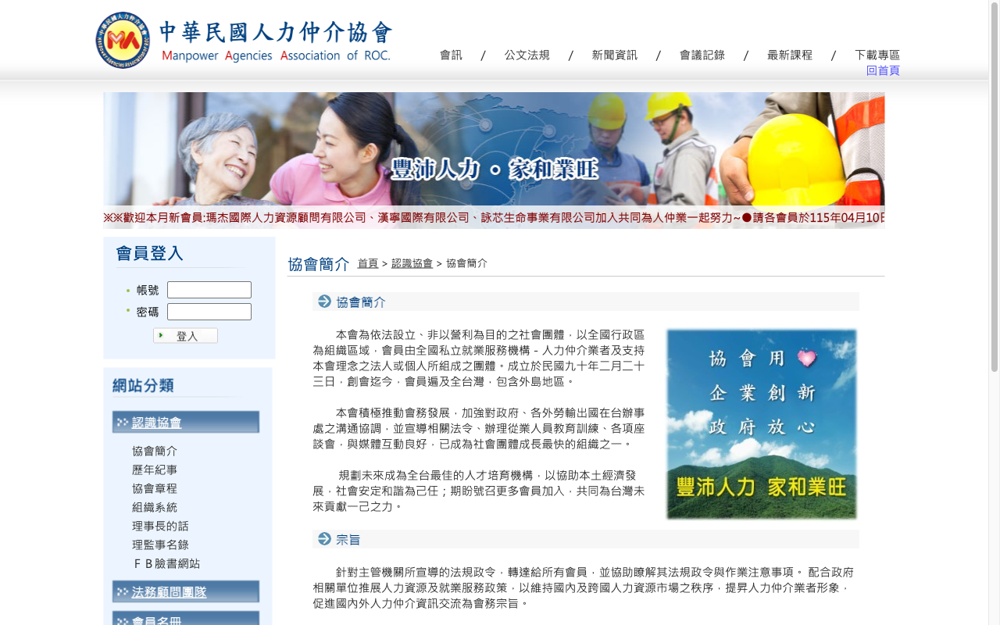
原本畫面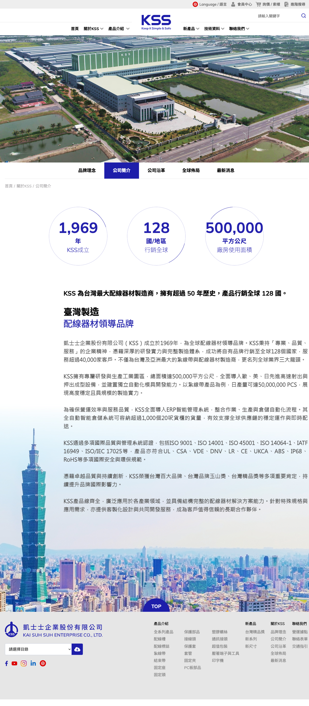
建議參考← DRAG TO COMPARE →
KSS 凱士士 — 前往查看 →OPTIMIZATION
會訊 / 公文法規 / 新聞 / 會議記錄 分散四處，內容重複
公告 / 法規
新聞 / 會議記錄
關鍵字 + 日期
分類快速查找
重要消息優先
可設定期限
一鍵分享
LINE / Facebook
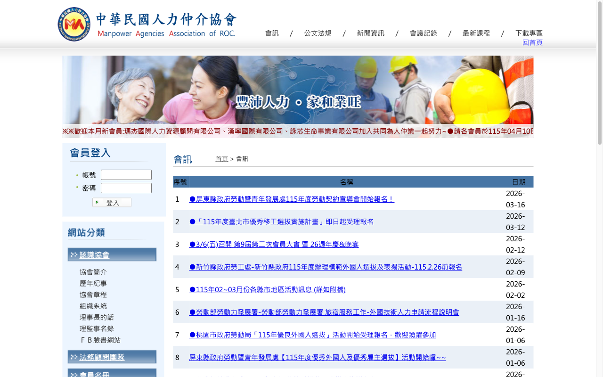
原本畫面← DRAG TO COMPARE →
教育部就輔辦公室 — 前往查看 →NEW FEATURE
課程以文章發布，報名靠電話 / Email，無法追蹤紀錄
月曆檢視
所有課程時程
會員登入報名
顯示剩餘名額
綠界 / 藍新
金流整合
查詢時數
證書下載
講義 / 影片
會員限定
OPTIMIZATION
登入框永遠佔左側、功能單薄、安全性不足
右上角按鈕
Modal 彈窗
會費 / 課程
個資 / 文件
到期提醒
線上繳費紀錄
HTTPS + 認證
Email 密碼重設
OPTIMIZATION
8 個子分類命名不一致、無預覽、無搜尋、評鑑重複 2 類
合併重複分類
清楚歸類文件
瀏覽器直接預覽
不需下載
關鍵字 + 分類
更新日期標示
線上填寫送出
取代紙本
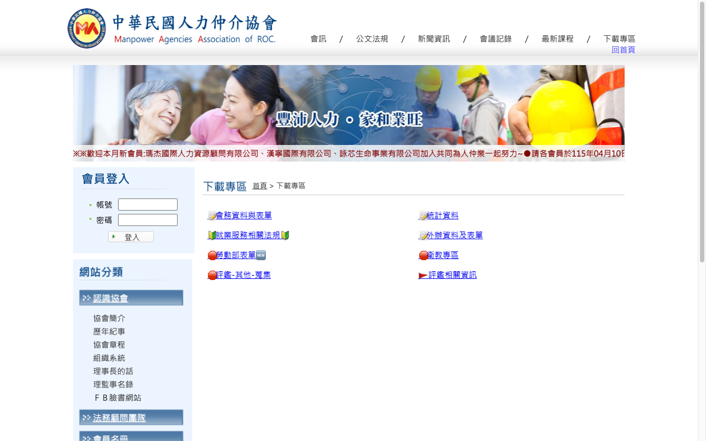
原本畫面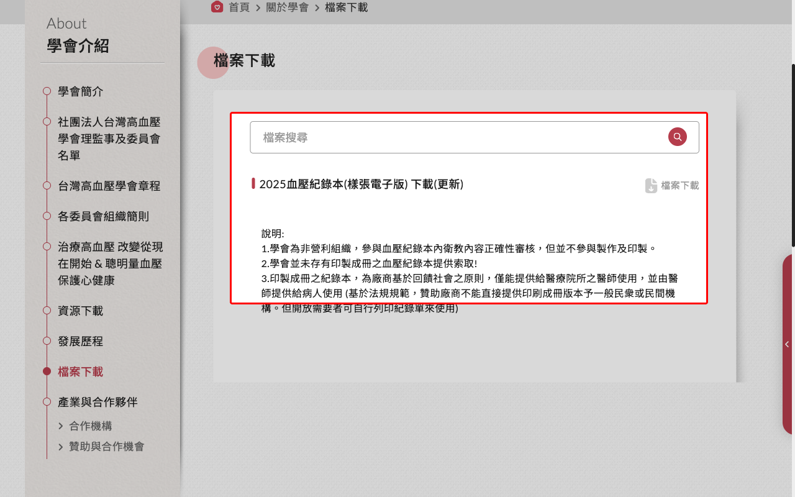
建議參考← DRAG TO COMPARE →
台灣高血壓學會 — 前往查看 →OPTIMIZATION
公司名稱
地區查找
登入後
才可查看
公司 Logo
+ 簡介
嵌入
互動式地圖
一般洽詢
會員專用
LINE QR
FAQ 問答
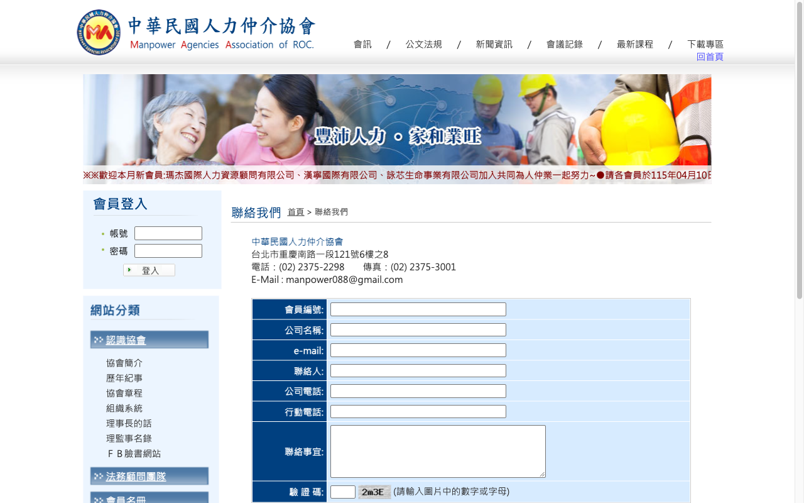
原本畫面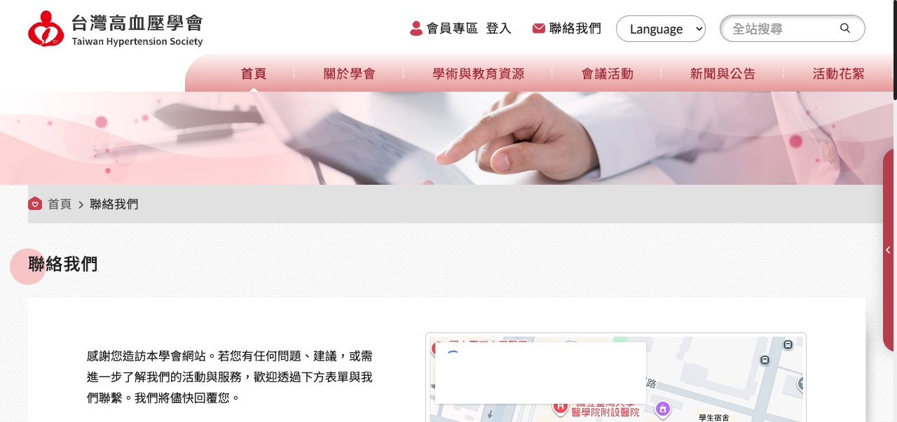
建議參考← DRAG TO COMPARE →
台灣高血壓學會 — 前往查看 →NEW FEATURE
活動花絮頁面簡陋，無報名系統，無法線上參與
年度活動時程
一目了然
與課程系統整合
統一報名入口
照片 / 影片
分年度瀏覽
PROJECT FLOW
從需求到上線，每個階段都有清楚的交付與確認點
深入了解協會定位、會員需求、現有問題
網站架構規劃、功能清單確認、報價簽約
UI 視覺設計、前後端開發、響應式切版
功能測試、內容上稿、教育訓練、正式上線
PLATFORM
ROADMAP
LET'S CREATE TOGETHER
台北・台中・台南
← 拖曳比較 →